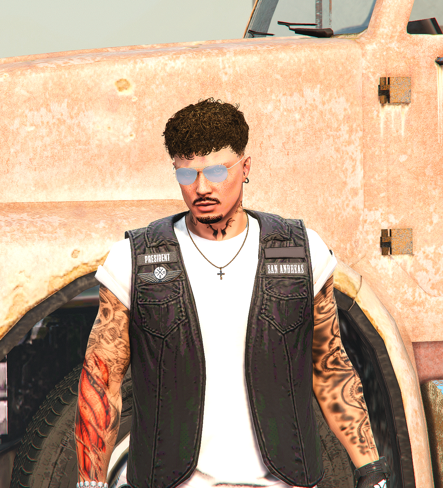

Datos personales
Nombre / Nombres del personaje: James Scott
Apodo del personaje: M
Edad del personaje: 25 años, 20 de mayo del 2000
James Scott es un personaje de Infames Legacy este fue interpretado por Rayzzer en la primera versión de Infames Legacy. En este momento se encuentra en Sturgis junto a su mujer, hijos y MC.
| James Scott | |
|---|---|
|  | |
| Datos personales | |
| Nombre | James Scott |
| Apodo | M |
| Información personal | |
| Género | Masculino |
| Orientación | Hetero |
| Información OOC | |
| Servidor | Infames Legacy |
| Interpretado por | Rayzzer |
Datos personales Historia Descripción física Personalidad y sexualidad Curiosidades Relaciones
Nombre / Nombres del personaje: James Scott
Apodo del personaje: M
Edad del personaje: 25 años, 20 de mayo del 2000
James Scott también conocido como M desde muy pequeño sintió una gran pasión por el mundo del motor, ya que su padre pertenecía a un MC y fue inculcado en los valores militares y en el respeto a rangos superiores. Su padre se aseguró que desde muy joven James creciera con una llave de tubo en la mano para que empezara a hacer sus pinitos en la mecánica. Ya que desde pequeño fue enseñado en el tema de la mecánica, eso hizo despertar una pequeña inquietud por aprender y crecer en el sector del motor.
En uno de sus viajes acabó en el taller de Carter Slayter, un chico no más mayor que él pero con el conocimiento de un anciano en el mundo del motor. James al ver su gran capacidad, empezó a ejercer como su pupilo, aprendiendo todo lo posible de él. Con el tiempo, Carter decidió emprender un nuevo rumbo para volver a su casa en Paleto y formar un pequeño grupo de moteros, y al ser James su pupilo, Carter lo posicionó como vicepresidente del MC para que siguiera aprendiendo.
Más tarde consiguió ser el presidente cuando todo el mundo se fue y quedó el solo con P y Connor. Este vio la llegada de otros MC y sintió la persión, por lo que habló con la filial madre de la situación y le instauraron de presidente. En este momento y luego de revivir el MC se encuentra en Sturgis como presidente, casado con Laia y con sus dos hijos Troy y Vera.
Altura del personaje: 1.80 m
Descripción física: Estructura mesomorfa, de color de ojos azulados, color de pelo negro y con múltiples tatuajes en el torso, brazos, cuello y piernas (simbolos del MC al que pertenece, animales, alas y un ojo).
Personalidad: Persona bastante impulsiva en los momentos más criticos, derivando a la violencia (posible TEI), terquedad notoria con carácter muy fuerte (resulta difícil hacerle cambiar de opinión casi siempre). Sentimiento de lealtad bastante desarrollado. Tiene grandes ambiciones y aspiraciones en su vida presente y futura.
Orientación sexual: Hetero.
Casado con Laia Roca.